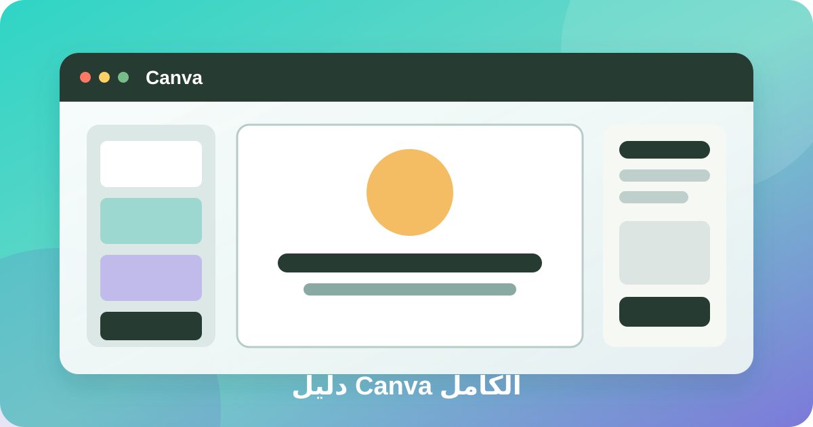

ما هو Canva وما الذي تقدمه الخطة المجانية؟
Canva منصة تصميم بصرية عبر المتصفح وتطبيقات الهاتف، تضم قوالب جاهزة وأدوات للنص والصور والأيقونات والفيديو والتحريك والتصدير. توفر الخطة المجانية مساحة واسعة للمشاريع الشخصية والتجارية الصغيرة، بينما تبقي بعض الصور والعناصر والقوالب المتقدمة وأدوات الذكاء الاصطناعي ضمن خطط مدفوعة أو للاستخدام المحدود حسب عرض Canva الحالي.
قبل استخدام أي عنصر، تحقق من ترخيصه والدرجة التي يسمح بها للاستخدام التجاري. قد تتغير أنواع العناصر المتاحة والاشتراكات والتراخيص، لذا افتح صفحة استخدام الخدمة والتراخيص لدى Canva وتأكد من شروط مشروعك في وقت الاستخدام.
ابدأ مشروعًا مناسبًا للغرض لا للقالب فقط
اختر مقاس المشروع بناءً على مكان النشر: منشور Instagram مربعًا 1080×1080، قصة أو Reel عموديًا، عرضًا تقديميًا بمقاس 16:9، أو إعلانًا وفق مقاس المنصة. لا تبدأ بالتصميم قبل تحديد الجمهور والرسالة الرئيسية المطلوبة؛ فالقالب الجيد ليس دائمًا الاختيار الأنسب لمحتوى مشروعك.
خطوات إنشاء أول تصميم احترافي
- أنشئ حسابًا وابحث عن نوع التصميم، مثل منشور سوشيال ميديا أو عرض تقديمي.
- اختر قالبًا بسيطًا ذي تباين واضح ومكان مناسب للعنوان والشرح.
- غيّر النصوص إلى معلومات مشروعك، ثم قلل عدد الخطوط والألوان قدر الإمكان.
- استبدل الصور بعناصر مرخصة للمشروع أو صورك الأصلية، وتأكد من وضوح حقوقها.
- لخص الرسالة في سطر رئيسي واحد ثم أضف دعوة واضحة للعمل مثل «اعرف المزيد» أو «تواصل معنا».
- راجع التصميم عند مقاس الهاتف، وجرّب تحويله إلى PDF أو صورة أو فيديو حسب المنصة.
أنواع التصاميم التي يمكنك إنشاؤها
منشورات السوشيال ميديا
استخدم شبكة أو عمودًا بصريًا ثابتًا للعلامة التجارية، وثبّت خطًا للعناوين ولونًا للخلفيات وأسلوبًا موحدًا للأزرار والأيقونات. اجعل النص الكبير مفهومًا أثناء عرض التصميم المصغر، ولا تملأ الصورة بكلمات متعددة لا يمكن قراءتها بسرعة.
العروض التقديمية
قسّم العرض إلى شريحة عنوان وشريحة مشكلة وشريحة حل وشريحة إثبات وشريحة دعوة. استخدم الرسم والأرقام ولقطات المشروع بدل النصوص الطويلة، واترك مساحات بيضاء تسمح للجمهور بالتركيز.
الفيديو والرسوم المتحركة
يمكن إنشاء مقطع قصير بإضافة الصور والنصوص والصوت وتحريك العناصر. أحضر المشاهد السريعة، واستخدم تعليقًا نصيًا واضحًا لأن كثيرًا من المستخدمين يشاهدون مقاطع الهاتف دون صوت في البداية.
الشعارات والهوية البصرية البسيطة
يناسب Canva إنشاء مبدئي للشعار وغلاف العلامة، لكنه لا يغني عن فحص ملاءمته للطباعة والأحجام الصغيرة والملفات المتجهة. إذا كانت الهوية أساسية لمنتج تجاري، احفظ نسخة قابلة للتوسع واستعن بمصمم متخصص عند الحاجة إلى هوية مكتملة.
قواعد تنسيق تجعل النتيجة احترافية
- لا تستخدم أكثر من خطين في التصميم الواحد ما أمكن.
- تحكم بالتباين، فالنص المهم يحتاج لتميّز واضح عن الخلفية.
- حافظ على مسافات متساوية واتجاه بصري يجعل العين تنتقل للعنوان ثم التفاصيل ثم الزر.
- استخدم شبكة ومحاذاة، ولا تعتمد على الترتيب العشوائي للعناصر.
- راجع الأسماء والأرقام والروابط والإملاء قبل التصدير.
- اجعل النسخة العربية متصلة الاتجاه صحيحًا، وتأكد من ترتيب الأرقام والرموز عند التصدير.
العمل الجماعي والمشاركة والمجلدات
يمكن مشاركة القوالب والتصاميم مع فريقك وتحديد صلاحية العرض أو التحرير بحسب الخيارات المتاحة للحساب والاشتراك. اعمل داخل مجلدات منظمة حسب العميل أو المشروع أو المنصة، واستخدم أسماء ملفات توضح الغرض والتاريخ.
لا تشارك رابطًا عامًا إذا كان التصميم يحتوي معلومات خاصة أو تحليلات غير مخصصة للنشر. راجع إعدادات المشاركة قبل إرسال الرابط، واحذف صلاحيات الزوار الخارجيين عند انتهاء المهمة.
التصدير والنشر والطباعة
صدّر الصورة بصيغة PNG للرسومات الواضحة أو JPG للحجم الأصغر، واختر PDF للطباعة أو المشاركة. يمكن تصدير الفيديو بصيغة MP4، واستخدم مقاسات متعددة للأداء على المنصة المستهدفة. عند الطباعة، تحقق من وضع الألوان والدقة ومناطق القطع التي يطلبها المطبعة، ولا تعتمد على معاينة الشاشة وحدها.
متى يحتاج مشروعك إلى Canva ومتى لا يكفي؟
يناسب Canva التصاميم السريعة، المحتوى المتكرر، العروض، النشرات، وأعمال الفريق الصغيرة. لكنه قد لا يكون الأنسب عندما تحتاج معالجة صور معقدة أو رسومات متجهة دقيقة أو نظام هوية واسع أو إعدادات طباعة متخصصة جدًا. في هذه الحالات استخدم Canva للمراحل الأولية فقط، وانتقل إلى أدوات متخصصة مع مصمم أو مطبعة مؤهلين.
الخصوصية والحماية
قبل رفع بيانات عملاء أو مستندات داخلية، راجع سياسة الخصوصية وإعدادات الإشعار وميزات الذكاء الاصطناعي في الحساب. لا ترفع صورًا شخصية أو بيانات حساسة بلا ضرورة، ولا تستخدم حسابًا مشتركًا بكلمة مرور غير قابلة لإدارة فردية.
الخلاصة
Canva خيار عملي وسهل لإنشاء تصاميم اجتماعية وعروض ومحتوى مرئي بخطة مجانية. احصل على أفضل نتيجة ببدء مشروع واضح، واختيار قالب بسيط، وتقليل العناصر، والتحقق من التراخيص وحقوق النشر قبل النشر أو البيع. افتح Canva من الزر التالي، واستخدم نسخة تجريبية صغيرة قبل الاعتماد عليه في مشروع كامل.